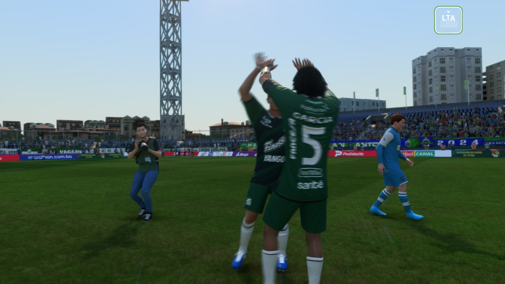

Uma galeria com cara de documentario esportivo para guardar cenas marcantes da carreira:
comemoracoes, taças, noites grandes e registros que merecem ficar em destaque.

Highlight reel29/04/2026
Frames salvos
0
Primeiro registro
--
Clima da pagina
Passe o mouse para sentir o zoom e clique em qualquer imagem para abrir em tela cheia.
A ideia aqui e deixar a carreira parecer um arquivo premium de bastidores e grandes noites.